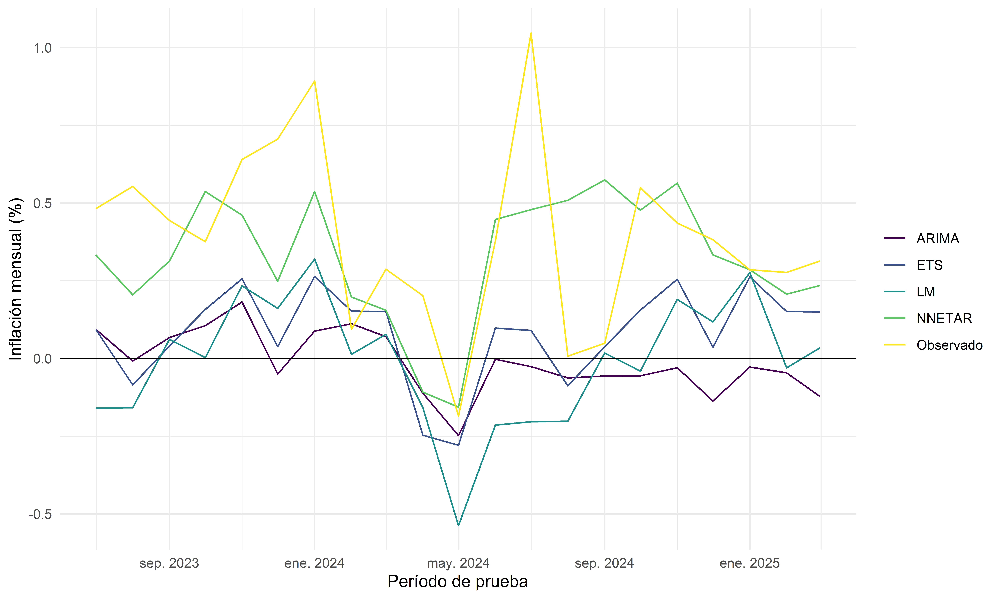
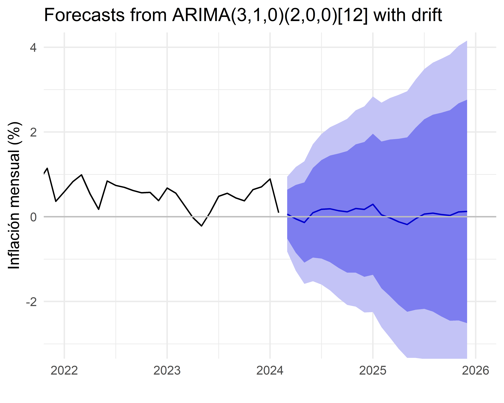
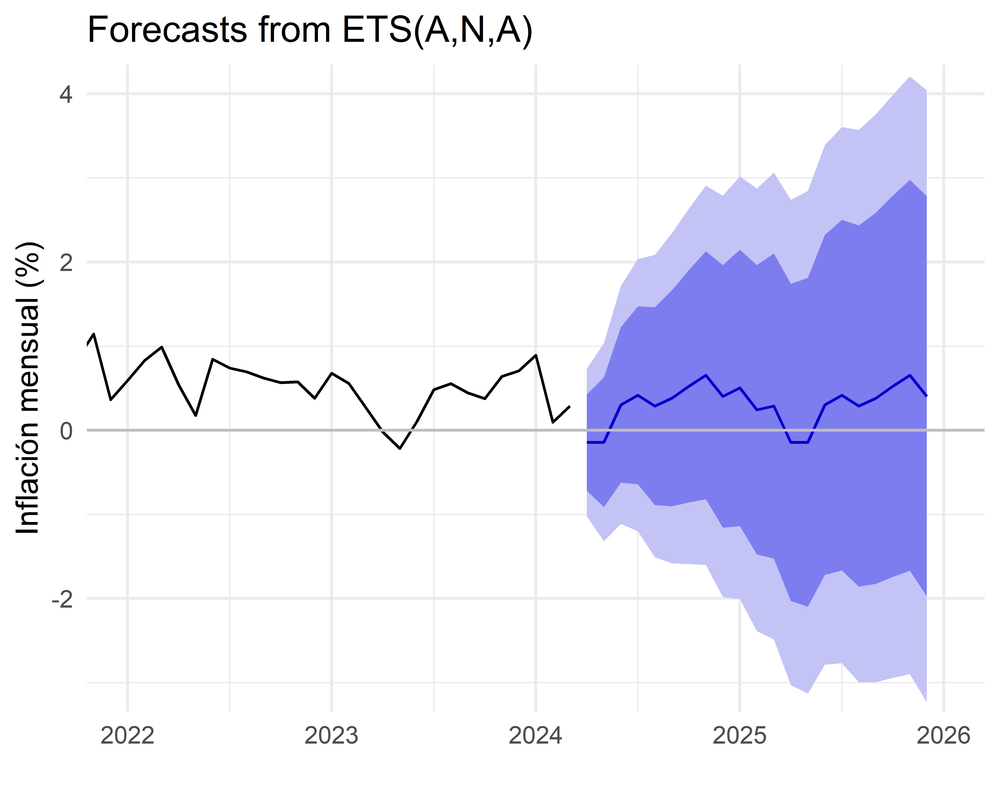
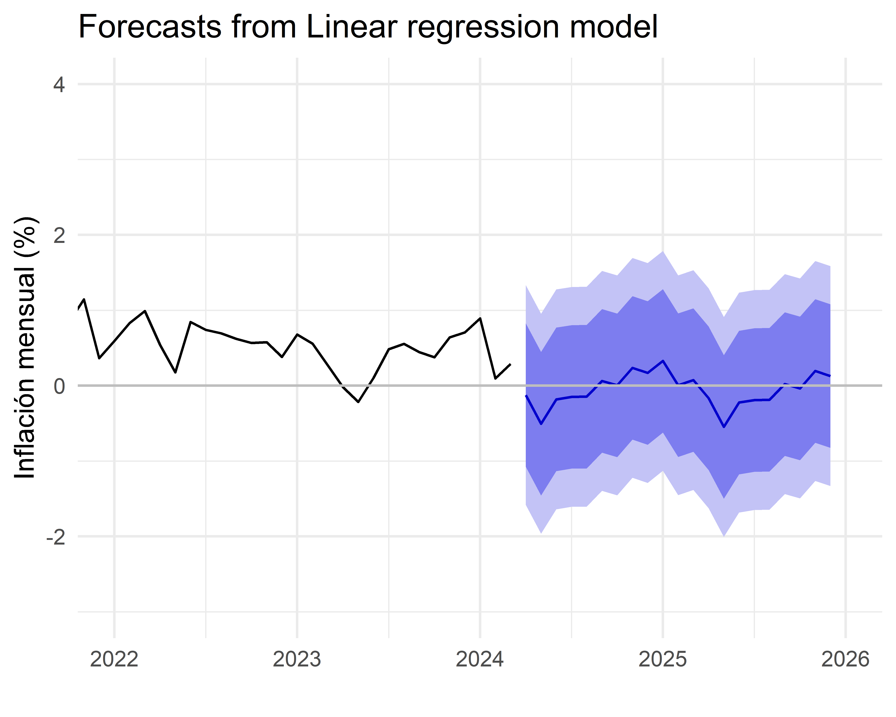
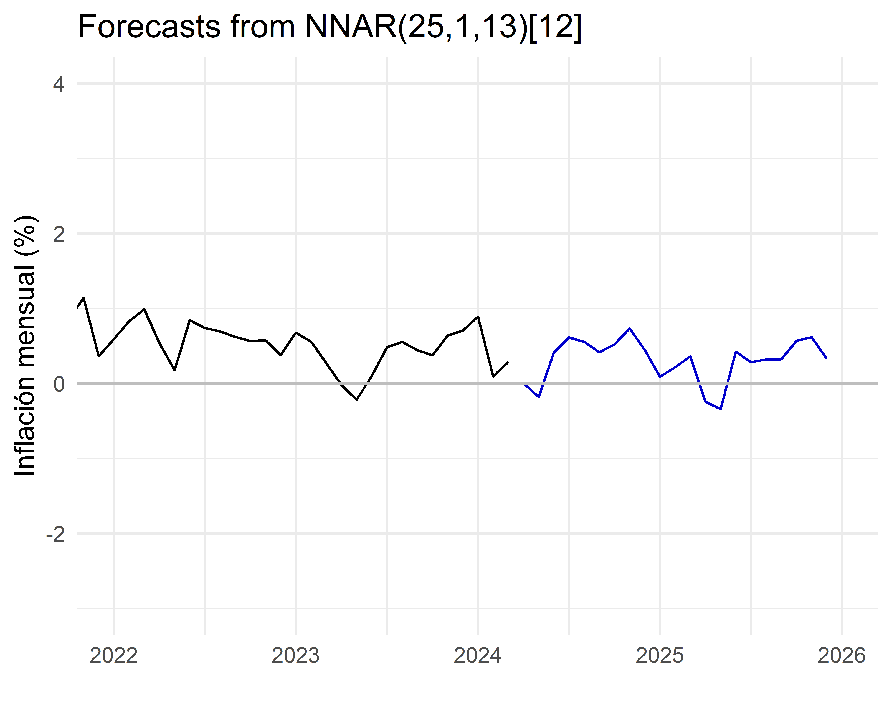
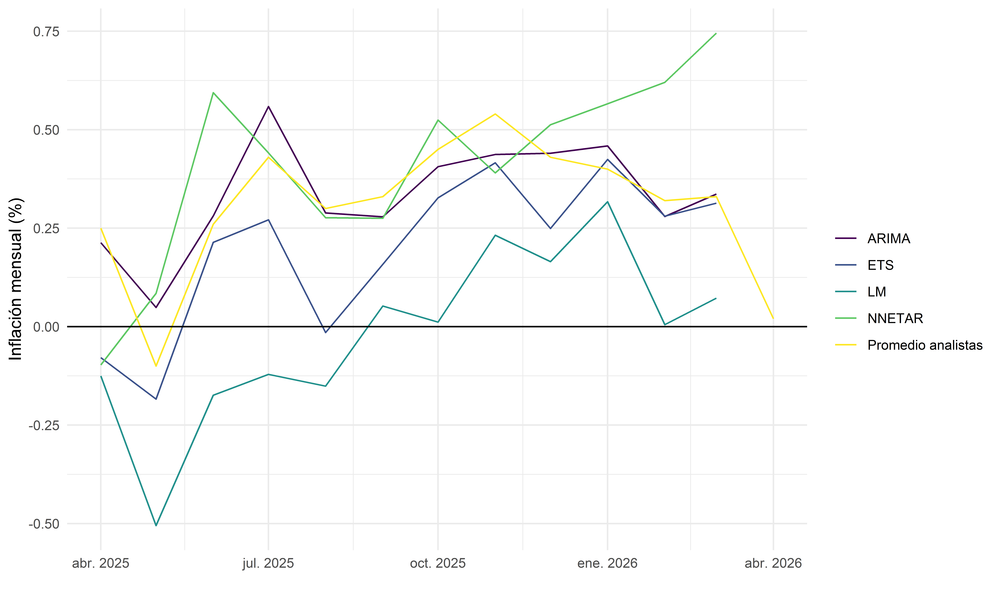
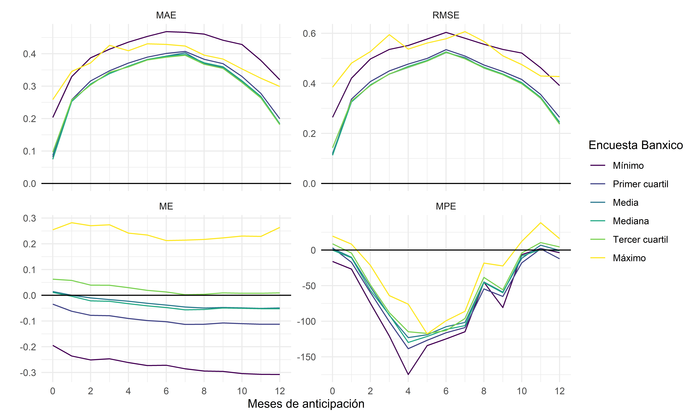

![]()

Pronóstico de inflación en México
Un enfoque de aprendizaje automático
Nota
Este reporte se actualizó por última vez el 24 marzo 2025 a las 10:27 hrs CDMX.
Modelos univariados
Hay al menos 50 maneras distintas de predecir el futuro, lo que implica que todavía no tenemos una herramienta de predicción perfecta (Hamming 1997). Una manera de generar predicciones automáticamente es con modelos univariados, que solo utilizan una serie de tiempo como insumo de sus predicciones (Hyndman y Khandakar 2008).
En esta sección, comparamos los modelos ARIMA, ETS, LM, y NNETAR para predecir la inflación mensual en México.1 De estos, el modelo ARIMA es el más conocido y utilizado en la literatura. Los modelos ETS y LM son útiles por ser más simples. Por último, el modelo NNETAR es un modelo de redes neuronales para series de tiempo que ha demostrado ser útil en la predicción de series de tiempo (Allen 2022).
Probando los modelos
Una manera de comparar distintos modelos de predicción es evaluar su precisión en un conjunto de datos externo; es decir, en un conjunto de datos que no se utilizó para ajustar los modelos (Hyndman y Athanasopolous 2021; James et al. 2021). En este caso, utilizamos los datos de inflación mensual desde enero 1994 hasta abril 2024 para ajustar los modelos y los datos desde mayo 2024 hasta febrero 2025 para evaluar su precisión. La Figura 1 muestra la serie de tiempo de inflación mensual (mes con mes) y los periodos de entrenamiento y prueba.

La Figura 2 muestra las predicciones de los modelos en el conjunto de prueba contra la inflación mensual observada. El modelo NNETAR parece ser el más preciso.
| Modelo | ME | RMSE | MAE | MPE |
|---|---|---|---|---|
| ARIMA | −0.01 | 0.46 | 0.28 | −37.80 |
| ETS | 0.00 | 0.44 | 0.29 | −52.70 |
| LM | 0.00 | 0.73 | 0.44 | −56.69 |
| NNETAR | 0.00 | 0.02 | 0.01 | −1.35 |
| Modelo | ME | RMSE | MAE | MPE |
|---|---|---|---|---|
| ARIMA | 0.52 | 0.59 | 0.52 | −50.13 |
| ETS | 0.40 | 0.45 | 0.40 | 18.96 |
| LM | −0.48 | 0.53 | 0.48 | −59.41 |
| NNETAR | −0.07 | 0.31 | 0.23 | −50.07 |
La Tabla 1 muestra algunas métricas de precisión de los pronósticos dentro y fuera de la muestra de entrenamiento.2 El modelo más preciso fue NNETAR, puesto que tuvo errores absolutos y cuadráticos más pequeños fuera de la muestra. Estas métricas son útiles para comparar diferentes modelos y las seguiremos utilizando para evaluar la precisión de los modelos en el pronóstico ex-ante.
Pronóstico ex-ante
Sabiendo cuán precisos son los modelos, procedo a pronosticar la inflación mensual en México desde marzo 2025 hasta diciembre 2025. Solo para fines comparativos, utilizaré todos los modelos aunque el mejor fue indiscutiblemente NNETAR.
La Figura 3 muestra los pronósticos de los modelos para los siguientes 10 meses. Algo importante para notar es que el modelo NNETAR (Figura 3 (d)) no produce intervalos de confianza, puesto que las predicciones por redes neuronales pierden interpretabilidad y no permiten tener una medida de la varianza de la predicción.




Una manera de evaluar la precisión de los pronósticos ex-ante es con respecto a la encuesta de expectativas de inflación mensual del Banco de México (Banco de México s. f.). La Figura 4 muestra los pronósticos de los modelos para los siguientes 12 meses y los compara con la media de las respuestas de la encuesta. Ninguno de los modelos que entrené se ajusta perfectamente al promedio de las expectativas, pero NNETAR y ETS están muy cerca.

La Tabla 2 muestra la precisión de los modelos en la muestra completa respecto a la media de las expectativas de los analistas de Banxico. Es importante notar que el mejor modelo en nuestras pruebas (NNETAR) no es el que resultó estar más cerca del promedio de los analistas. Sin embargo, esto obliga hacer la pregunta ¿qué tan preciso puede ser el proimedio de analistas para predecir la inflación? La Sección 2 busca responder esta pregunta.
Otra manera de medir la precisión del pronóstico es comparando la inflaicón anual para 2025 con la media de las expectativas de los analistas de Banxico. La Tabla 3 muestra que el modelo NNETAR tuvo una predicción muy cercana a la expectativa promedio de los analistas de Banxico.
| Modelo | ME | RMSE | MAE | MPE |
|---|---|---|---|---|
| ARIMA | −0.02 | 0.13 | 0.11 | −66.16 |
| ETS | −0.01 | 0.05 | 0.05 | 19.02 |
| LM | −0.34 | 0.36 | 0.34 | −47.38 |
| NNETAR | 0.03 | 0.17 | 0.12 | 1.54 |
| Modelo | Pronóstico | Banxico | Error | Error porcentual |
|---|---|---|---|---|
| ARIMA | 3.33 | 3.73 | −0.40 | −10.63 |
| ETS | 3.71 | 3.73 | −0.02 | −0.41 |
| LM | −0.60 | 3.73 | −4.33 | −116.21 |
| NNETAR | 2.95 | 3.73 | −0.78 | −20.89 |
Poder predictivo de la encuesta de expectativas
Esta sección evalúa la capacidad predictiva de la encuesta de expectativas de inflación del Banco de México.
La Figura 5 muestra que las predicciones intercuartílicas (primer cuatil, media, mediana, y tercer cuartil) tienen aproximadamente la misma capacidad predictiva a lo largo de todo el horizonte de predicción (de cero a doce meses de anticipación). Es importante destacar que los errores absolutos (MAE y RMSE) son no monotónicos; es decir,. las mejores predicciones son con anticipaciones cercanas a cero y a doce meses. Las peores predicciones son a seis meses de anticipación.

La Tabla 4 muestra que las predicciones intercuartílicas tienen un error cuadrático histórico de 0.41 puntos porcentuales. Al comparar con los errores de mis modelos en la Tabla 1 (b), el modelo NNETAR tuvo mejor desempeño que el histórico de los analistas.
| Estadístico | MAE | RMSE | ME | MPE |
|---|---|---|---|---|
| Mínimo | 0.40 | 0.51 | −0.27 | −73.18 |
| Primer cuartil | 0.32 | 0.42 | −0.09 | −64.11 |
| Media | 0.31 | 0.41 | −0.03 | −56.64 |
| Mediana | 0.31 | 0.41 | −0.04 | −58.69 |
| Tercer cuartil | 0.31 | 0.41 | 0.02 | −52.12 |
| Máximo | 0.37 | 0.52 | 0.24 | −33.32 |
Conclusión
El mejor de los modelos que entrené resultó ser más preciso que la expectativa media de los analistas encuestados por Banco de México históricamente. En particular, el modelo NNETAR tuvo un error cuadrático medio de 0.31 en el periodo de prueba, mientras que la el promedio de los analistas tuvo un error cuadrático medio histórico de 0.41 puntos porcentuales.
Referencias
Allen, Benjamin. 2022. «Forecasting U.S. Inflation». https://kaggle.com/code/benjaminallen24/forecasting-u-s-inflation.
Banco de México. s. f. «Sistema de Información Económica». Accedido 26 de marzo de 2024. https://www.banxico.org.mx/SieInternet/.
Hamming, Richard R. 1997. Art of Doing Science and Engineering: Learning to Learn. CRC Press. https://books.google.com?id=50hZDwAAQBAJ.
Hyndman, Rob J., y George Athanasopolous. 2021. Forecasting: Principles and Practice. Melbourne, Australia: OTexts. https://otexts.com/fpp3/.
Hyndman, Rob J., y Yeasmin Khandakar. 2008. «Automatic Time Series Forecasting: The Forecast Package for R». Journal of Statistical Software 27 (julio): 1-22. https://doi.org/10.18637/jss.v027.i03.
James, Gareth, Daniela Witten, Trevor Hastie, y Robert Tibshirani. 2021. An Introduction to Statistical Learning: With Applications in R. 2nd ed. 2021 edition. New York NY: Springer.
Notas
ARIMA: Modelo autorregresivo integrado de media móvil.
ETS: Suavización exponencial
LM: Modelo lineal
NNETAR: Redes neuronales para series de tiempo↩︎
ME: Median Error.- Error de estimación promedio.
RMSE: Root median squared error.- Raíz cuadrada del error cuadrático medio.
MAE: Mean absolute error.- Error absoluto promedio.
MPE: Mean percentage error.- Error porcentual promedio.↩︎